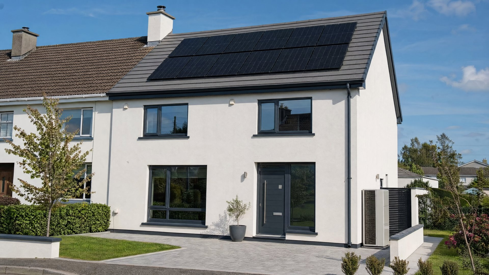

How We Handle Your Retrofit
From an old rating to a warm, low-energy home — planned as one job.
-
01
Free consultation & assessment
We start with a free, no-obligation consultation and a look at where your home is today — its BER rating, and where the heat and comfort are being lost.
-
02
Design the upgrade
We design the retrofit as a package — choosing the measures that take your home to the best rating it can reach — with 4D drawings so you can see the result before the work starts.
-
03
One team, signed off
One in-house team fits every measure. Our own QS prices the job and a structural engineer signs off where needed, so nothing falls between separate contractors — and we guide the grant side alongside it.
-
04
Warmer, cheaper to run
We bring the whole house up together, so you feel it in comfort and running costs — not just on the cert at the end.
The Cold, Costly House
Warm the house you already have.
An older Cork home — maybe a 1970s semi in Douglas or a draughty house out in Glanmire — can be cold in every room, expensive to heat, and stuck on a low energy rating no matter how high you turn the thermostat.
A home retrofit fixes that from the fabric out. We upgrade the house as a whole — insulation, airtightness, ventilation, windows, and usually solar and a heat pump — so it holds its heat, costs far less to run, and climbs from a tired E, F or G toward a warm B2. Same house and street, transformed to live in.


What a Retrofit Involves
A package of measures, chosen to hit the rating.
A deep retrofit isn’t one product — it’s a set of measures that work together. To reach a B2, we select the right mix for your home from:
01
External or internal wall insulation — the biggest single step for warmth
02
Floor and attic insulation — sealing heat loss top and bottom
03
Airtightness — stopping the draughts no heating can beat
04
Ventilation, including HVAC / heat-recovery — fresh air without the heat loss
05
New windows and doors — warmer, quieter and better sealed
06
Solar panels — generating your own electricity, as part of the upgrade
07
A heat pump — efficient heating once the house can hold its warmth
08
BER assessment and grant paperwork, guided for you
Solar and a heat pump aren’t sold on their own here — they’re measures within the retrofit, fitted where they make sense for your home and the rating you’re targeting. The exact package is set after we assess the house, whether you’re in Ballincollig or Carrigaline — never assumed before. A retrofit can also form part of a wider home renovation, all handled by the same team.
Why TRC Homes
One team for the whole upgrade.
Retrofit headaches come from splitting the job — one crew for insulation, another for windows, someone else for the heat pump. We keep it together.
One team fits every measure
Insulation, airtightness, windows, solar and heat pump — all fitted by one in-house team and sequenced so the measures work together, not against each other.
One point of contact
You deal with the same team from the first assessment to the final rating — one number to call, one team accountable for how the house actually performs.
An honest consultation
The first visit is free and no-pressure. We assess the house, tell you what rating is realistically achievable and which measures are worth it, and give it to you straight before you commit.
Our Work
Built across Cork. Judged by the finish.
See a deep retrofit in detail.



In Their Words
Real Google reviews — TRC Homes was formerly The Renovation Centre.
Grants
Grant support, guided from the start.
A deep retrofit is where grant support matters most. SEAI home-energy grants can cover a significant part of the upgrade, and there can be council supports around it too. We guide you through it and feed your project to a registered grant agent who runs the SEAI application process — so the paperwork is handled, and the funding is worked into your quote from day one rather than chased afterwards.
- SEAI home-energy-upgrade grants, guided end to end
- Council supports around the energy upgrade, where they apply
- Run through a registered grant agent — not left on your desk
- Confirmed support factored into your quote up front

Common Questions
Home retrofit in Cork — the questions we’re asked most.
What is a deep retrofit?
A deep retrofit is a whole-house energy upgrade. Rather than doing one measure in isolation, we improve the house as a system — insulation, airtightness, ventilation, windows and doors, and usually solar and a heat pump, all working together — to take an older, draughty house up to a modern, warm, low-energy standard in one coordinated project.
What BER rating can you get my house to?
Most older Cork homes start at an E, F or G, and the aim of a deep retrofit is to bring the house up toward a B2 — the standard the grant-supported upgrade is built around. We’ve taken a 1970s Cork home as far as an A1. How far your house can go depends on its construction and which measures make sense, which we assess before recommending a package.
How do the SEAI retrofit grants work?
Deep retrofits are supported by SEAI home-energy grants, and there can be council supports around an energy upgrade too. We guide you through it and feed your project to a registered grant agent who runs the SEAI application process, so the paperwork is handled rather than left to you — and where support is confirmed, it’s factored into your quote up front.
Do I need to move out during the retrofit?
Not always. A lot of a retrofit — external insulation, windows, solar and a heat pump — can be done while you stay living in the house, with some disruption. A deeper, more involved upgrade can be easier with the house empty for a period. We talk the phasing through at the consultation so you can plan around it.
Are solar panels and a heat pump worth it?
On their own they’re only part of the picture — a heat pump works best in a house that’s already well insulated and airtight, and solar adds most alongside those measures. That’s why we treat them as part of a whole-house retrofit rather than standalone products, fitting them where they make sense for your home and the rating you’re aiming for.
How long does a home retrofit take?
It depends on how deep the upgrade goes and which measures are involved, so we set a realistic programme after the assessment rather than promising a fixed number up front. Because one in-house team fits all the measures, there are fewer gaps than a job split across separate contractors.
How much does a home retrofit cost in Cork?
There’s no single figure — a retrofit is quoted per square metre after we’ve assessed the house, and the price moves with the measures needed to hit your target rating and the level of finish. Grant support can offset a meaningful part of the cost, and we factor that into your quote up front. You get a clear, itemised figure once we’ve surveyed the house, not a headline number that means little.
Ready to start?
Answer three quick questions and we’ll be in touch.